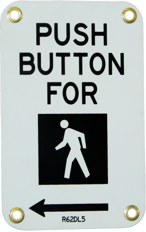

<button class="bi bi-play-circle" (click)="startTrafficLight()"></button>
<button class="bi bi-pause-circle" (click)="stopTrafficLight()"></button>

<div class="item">
    <div class="traffic-light">
        <div class="light" [ngClass]="{'red': lightColor === 'Red' || lightColor === 'RedAndYellow'}"></div>
        <div class="light" [ngClass]="{'yellow': lightColor === 'Yellow'|| lightColor === 'RedAndYellow'}"></div>
        <div class="light" [ngClass]="{'green': lightColor === 'Green'}"></div>
    </div>

    <div class="pole">
        <div class="pedestrian">
            
            <button class="button" (click)="extendGreenLight()">
                
            </button>
        </div>
    </div>
    <div class="pole-end"></div>
</div>
